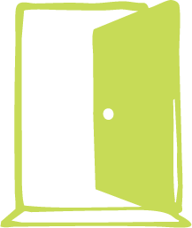
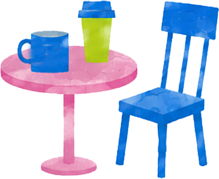
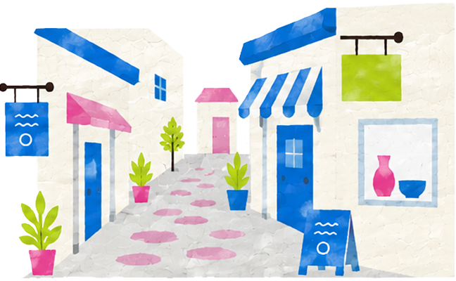
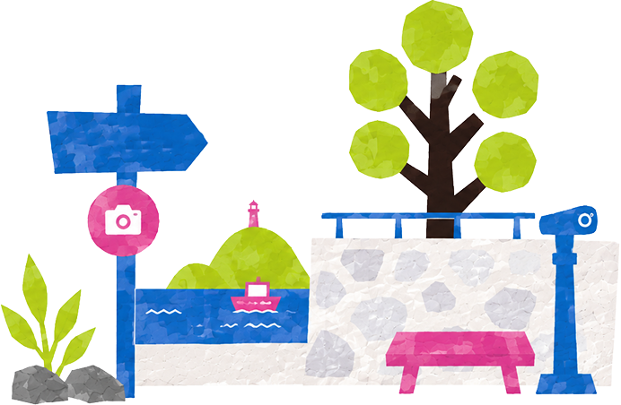
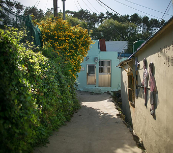

여백 이야기
빈집과 폐공간이 간직한 시간과 흔적을 존중하며,
사람의 머무름과 경험으로 영도 골목을
다시 살아있는 공간으로 만듭니다.
사라진 것이 아닌,
잠시 비워진 상태의 공간

허물지 않고,
시간과 흔적을 살리는 재생
기억하고 기록하며
다시 이어가는 이야기
머무름
정해진 길보다 마음 가는 방향으로,
영도의 골목을 자유롭게 걸어보세요.



이어짐
영도의 골목과 바다를 따라 걸으며,
비워진 공간 속 시간을 직접 마주하는
산책 코스입니다.

자세히 보기
기록함